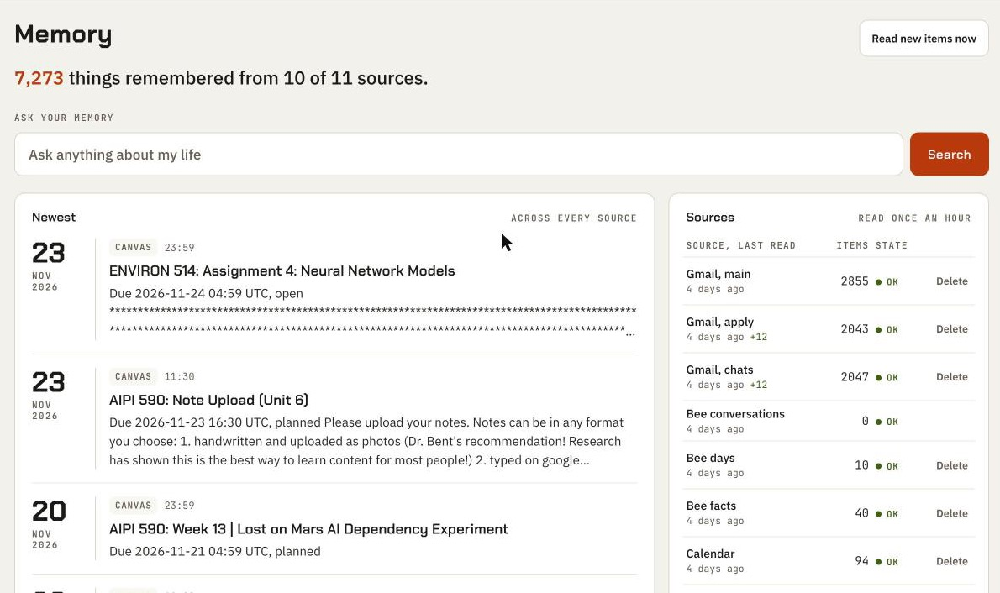
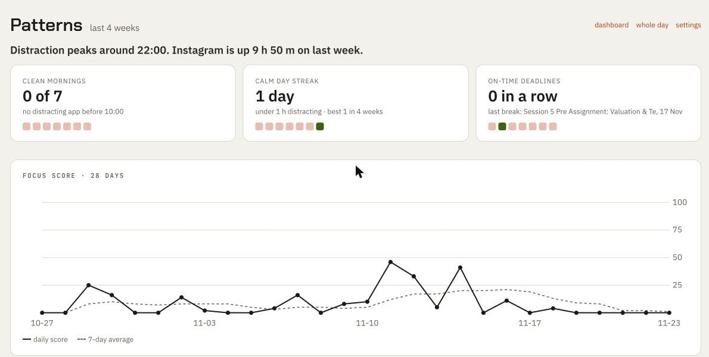
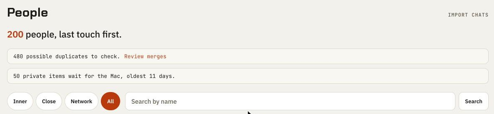
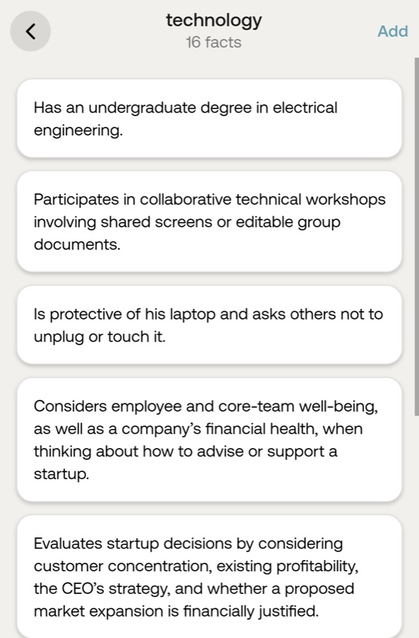

I've been recorded 24/7 for 7 weeks. Now an AI can be me.
A Bee pendant has recorded and transcribed nearly everything I have said since 2 October. An AI read 48 lines from it and wrote 47 more in my voice.
Ten people who know me tried to tell my lines from the AI's. My girlfriend scored 50%, on her third try. So would a coin.
The problem
A recording pendant hears months of how you talk. That is exactly what someone needs to write messages that sound like you.
-
Your speech is recorded
A wearable turns every conversation into searchable text.
-
The transcripts leak
A breach, a shared export or a malicious companion app copies them.
-
An AI learns your voice
A language model is prompted with your words and writes new ones.
-
A friend gets a text
"Lost my card, can you send me 200?" This study tests whether they notice.
Why it matters now
Recording pendants now sell by the million, and losses to AI-powered fraud are counted in the hundreds of millions.
Plaud recording devices sold, as reported by the company. Amazon bought Bee, the pendant used here, in July 2025; Meta bought Limitless in December.
Reported US losses to AI-enabled scams in 2025, FBI Internet Crime Report.
Complaints to the FBI that involved AI in 2025. The FTC has warned since 2023 about fakes of family members in distress.
We tend to assume the people closest to us are the last line of defence: "I'd know if it wasn't them." I tested that on myself.
What a pendant knows about you
This is the part that worries me most. An AI recorder is not a fitness tracker. After seven weeks, mine holds a searchable record of my life.
While choosing lines for this study, I found the pendant's AI summaries had picked up details of my finances and private health information. I had never thought of those conversations as being recorded. It scared me.
- Every conversation, word for wordClasses, calls, arguments, jokes, things said in private.
- An AI summary of every dayWho I saw, what we talked about, how the day felt.
- Where I wasPlaces attached to each conversation.
- Other people's wordsFriends and strangers who never agreed to be recorded.
- The sensitive partsTalk about health, money, relationships and plans, the same things I removed from this study.
Leaks are not hypothetical
Companies that hold intimate data keep getting it wrong, including the one that now owns my pendant.
Amazon, now Bee's owner, paid $25M to the FTC for keeping children's Alexa voice recordings, even after parents asked for deletion. In a separate case, Ring staff could view customers' private videos. Amazon denied wrongdoing.
23andMe: attackers took data on 6.9 million people, including genetic and health reports, and it went unnoticed for about five months.
DeepSeek left a database of users' chat logs open on the internet with no password.
FBI: 22,000+ complaints about AI-enabled scams, about $893M lost.
If pendant data leaks, it can be used to
This study: friends could not spot an AI writing as me from 48 of my lines.
Private conversations, word for word, with dates and places.
Pet names, schools, birthdays and other answers to security questions come up in normal talk.
Where you live, work and spend your evenings.
Everyone you talk to is in the record too.
An AI can mine weeks of speech for habits, worries and weak spots in seconds.
Should you wear one? Think hard first. If you do:
- Assume one day it leaks. Don't record what you could not live with being public.
- Mute it for private conversations, and tell people when it is on.
- Delete transcripts regularly, and prefer devices that process on the device.
- Use a strong unique password and two-factor login, and check which apps you have connected.
- Agree a check question with family, and never send money because of a text alone.
Jarvis: my shot at giving an AI my whole life
Before this project I built Jarvis, a personal AI that I connected to almost everything about me. The pendant is only one of its feeds.
- What I sayBee pendant conversations, around the clock.
- What I write and readGmail (it reads and drafts), Google Docs and Sheets.
- What I have to doCanvas deadlines, Google Calendar and Tasks.
- Where I amMy phone's location through the day.
- What I do on screensEvery app I open on my phone, my Mac's activity, even my coding sessions.
- My bodyHealth data from Google Health.
- Who I knowA People page and a Memory page built from all of the above.
- My job huntApplications, interviews and prep, tracked and coached.
- My patternsDaily stories of my day and the habits it spots across weeks.
- Ask it anythingA chat that answers from my records: "what did she say about the deck?"
It texts me before deadlines, calls me with a voice agent when I have no plan, and checks what I promised against evidence. Its roadmap even has a stage called "the twin".




One system now holds my words, my email, my schedule, my location, my habits and my health. That is useful, and it is exactly what an attacker would want. This project tests the first danger: can an AI already pass as me?
How the test worked
My Bee pendant has recorded nearly everything I have said since 2 October 2026. From those seven weeks I took 48 standalone sentences, after removing anything private: relationships, health, family, money, and any line naming someone.
A language model read them and wrote 47 new sentences in my voice.
Friends saw one shuffled line at a time and pressed "really him" or "AI twin". In the study rounds nobody saw the answers until the end, and everyone knew in advance that some lines were fake.
What we found
Ten friends judged single lines. However I count it, the result lands on a coin flip.
No better than guessing
78 of 160 decisions with saved answers were right (likely range 41% to 56%). Averaged one friend at a time it is also 49%.
Three more friends reported their scores without saving answers. Counting them too: 111 of 250, or 44%. Either way, a coin flip sits inside the range.
Twin lines passed as often as mine
The AI's lines were called "him" 59% of the time, my real lines 56%. That gap is two decisions, so the point is not that the twin won: friends could not separate the two at all.
In signal-detection terms, sensitivity d′ = −0.06 (0 means no ability to tell them apart), and friends said "him" 58% of the time, a lean towards trust that helps an impostor.
Nobody was reliably good at it
The best friend scored 14 of 20, which is not significant on its own. My partner scored exactly 50%. One friend reported 6 of 30. If that score is exact it is far below chance (p = 0.001), but their answers were not saved, so I cannot check why.
Friends didn't agree with each other
Four friends judged the same 20 lines. They were unanimous on one line, the biryani line, and it was the twin's. Overall they agreed less than chance would predict (Fleiss' κ = −0.17). Their majority vote was right on 3 lines, wrong on 5 and split on 12, so asking more people did not help.
This is evidence of no skill, not just too little data
A small study that finds nothing can simply be underpowered. Four checks rule that out here.
| Could this sample have caught real skill? | Yes. A true accuracy of 61% would show up 80% of the time. |
| Is accuracy inside 50% ± 10 points? | Yes. Equivalence test p = 0.015. |
| Guessing or some ability? | Guessing fits the data about 10 times better (Bayes factor 9.6). |
| Did a simple style detector do better? | No. 59% on all 95 lines, not significant (p = 0.11). |
The lines that fooled people
Lines judged by five friends, ranked by how often they were called "him". Casual, slightly annoyed everyday lines passed best. My most technical real lines were the ones friends doubted.
What it means
Short messages are the weak spot
The cheapest attack is one short text, and that is exactly the format where people who know me well failed. "I'd know if it wasn't them" is not a safe assumption.
Trust works against you
Friends default to believing it's you. An impostor doesn't need a perfect imitation, only one that doesn't sound wrong.
Recorded speech is sensitive data
Wearable transcripts should be treated like a password: kept on the device, retained briefly, never shared by default.
Agree a check in advance
A family question only the real person can answer, or a call back on a known number before sending money, beats trying to spot style.
What's next
A twin that knows nothing about me
The missing control. If it passes as often, one-line impersonation needs no personal data at all.
Feed the twin all seven weeks
Does a twin built from the full pendant record beat one built from 48 lines? This measures how much the recordings themselves add to the risk.
Real conversations and a cloned voice
Multi-turn chats and voice notes, where shared memories should help friends, or where the twin's knowledge of my life might help it more.
Can people learn to spot it?
The test now gives instant feedback. Those rounds show whether accuracy rises over 20 lines.
Test the defence
Measure whether a family check question actually stops a twin that has read weeks of my life.
Audit the pendants
Compare what each AI recorder stores, for how long, and who can access it, and publish a plain-language checklist.